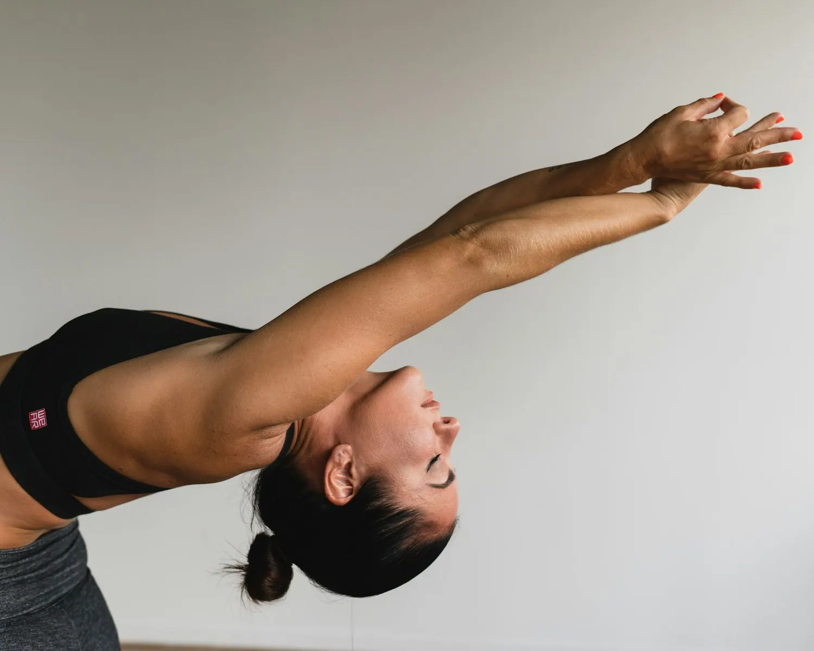

Jóga pro děti s králíčky v Ostravě
60 minut pro děti od 5 let s jedním rodičem. Víc her než ásan a sedm králíků, kteří si sami vybírají, ke komu přijdou.
Jestli hledáte, co podniknout s dítětem v Ostravě, tahle lekce spojuje lehký pohyb, hry a respektující kontakt se zvířaty. Nepotřebujete žádnou zkušenost s jógou — ani vy, ani dítě.

Jak lekce probíhá
| Kdy | Co se děje |
|---|---|
| 0–10 min | Jak se ke králíkovi přiblížit, aby neutekl. Jediné pravidlo, které si děti musí zapamatovat. |
| 10–35 min | Pozice se zvířecími jmény, hry a hodně smíchu. |
| 35–60 min | Klid na dece, krmení a hlazení. |
Děti se tady učí jedinou věc: být tak klidné, aby k nim někdo přišel dobrovolně. Nedá se to odbýt ani vynutit — králík pozná rozdíl. Funguje to i na rodiče.
Praktické informace
- Věk: od 5 let, dítě v doprovodu jednoho rodiče
- Kdy: právě vypsané termíny najdete na rezervační stránce
- Kde: Fit&Fun Studio, Tovární 486/7, Ostrava-Mariánské Hory
- Cena: 499 Kč, platí se online kartou při rezervaci
- Kapacita: maximálně 10 míst
- S sebou: pohodlné oblečení a ponožky. Podložky, dečky i polštáře máme
- Přijďte o 10 minut dřív, ať se stihnete v klidu zout a králíci si vás stihnou očichat
Proč zrovna králíci
Králík se nedá popohnat, nepřiběhne na zavolání a k dítěti, které kolem něj běhá, zpravidla nepřijde. Kontakt proto vzniká pomalu a jen tehdy, když ho chtějí obě strany.
To je z výchovného hlediska mnohem užitečnější zvíře, než se zdá. Dítě dostane okamžitou a naprosto spravedlivou zpětnou vazbu na to, jak se chová, a přijde na ni samo. Žádné napomínání nefunguje takhle rychle.
Naši králíci mají v sále vlastní klidové zóny, kam za nimi nikdo nesmí. Jak probíhá naše jóga se zvířaty v Ostravě, najdete na hlavní stránce.
Co když se dítě bojí zvířat?
Nikdo ho k ničemu netlačí. Stejně jako dospělí si i děti samy rozhodují, jestli chtějí králíka pohladit, nebo ho jen chvíli sledovat zpovzdálí — a králík si stejně vybírá, ke komu půjde sám. Většina dětí se uvolní, jakmile zjistí, že po nich nikdo nic nechce.
A když dítě potřebuje spíš vyběhat energii než sedět v klidu, taky to sedí. Lekce má víc her a pohybu než klasická jóga — jediné, co se od dětí čeká, je zpomalit těsně předtím, než králík přijde. To jde snáz, když má dítě předtím prostor se proběhnout, ne když se nutí sedět od začátku.
Časté dotazy rodičů
Od kolika let může dítě na jógu s králíčky?
Od 5 let. Mladší děti ještě neudrží klid tak dlouho, aby k nim králík přišel dobrovolně, a lekce by je spíš frustrovala než bavila.
Musí jít rodič s dítětem?
Ano, dítě chodí v doprovodu jednoho rodiče a rodič cvičí s ním. Není to hlídání — je to společná hodina, na které se dospělý zklidní obvykle dřív než dítě.
Musí dítě umět cvičit?
Ne. Pozice mají zvířecí jména, děti je napodobují a nikdo nic neopravuje. Je v tom víc her než ásan.
Kolik dětí je na lekci?
Maximálně deset. V přeplněném sále se králíci schovají a lekce ztratí smysl.
Co si má dítě vzít?
Pohodlné oblečení a ponožky, cvičí se bez bot. Podložky, dečky i polštáře půjčujeme. Silné parfémy a vonné krémy raději ne, králíci mají citlivý čich.
Kolik stojí dětská lekce a kde je?
499 Kč, Fit&Fun Studio, Tovární 486/7, Ostrava-Mariánské Hory. Lekce trvá 60 minut a platí se online kartou při rezervaci. Aktuální termíny jsou na rezervační stránce.
Co když má dítě alergii na srst?
Sál pečlivě větráme a čistíme, ale alergeny to neodstraní úplně. Při alergii na zvířecí srst lekci raději zvažte nebo se poraďte s lékařem.
Co když se dítě králíka bojí?
Nikdo ho k ničemu netlačí. Stejně jako dospělí si i děti samy rozhodují, jestli chtějí králíka pohladit, nebo ho jen chvíli sledovat zpovzdálí — a králík si stejně vybírá, ke komu půjde sám. Většina dětí se uvolní, jakmile zjistí, že po nich nikdo nic nechce.
Je vhodná i pro neposedné dítě, co nevydrží sedět?
Ano, spíš naopak. Není to hodina, kde se sedí v tichu — je v ní víc pohybu a her než klasické jógy. Jediné, co lekce vyžaduje, je zpomalit těsně předtím, než přijde králík, a to jde snáz, když má dítě předtím prostor se vyběhat.
Dětské termíny vypisujeme průběžně
499 Kč za dítě s rodičem. Rezervace online, na místě se neplatí. Hodí se i jako dárkový poukaz.
Zobrazit aktuální termíny →